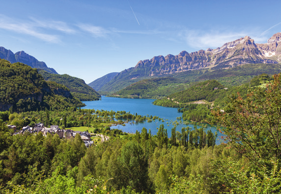

Las características de la Tierra han hecho posible la aparición y el desarrollo de los seres vivos en ella.
La atmósfera de la Tierra contiene gases, como el dióxido de carbono, a partir del cual los organismos autótrofos sintetizan la materia orgánica que los constituye, y oxígeno, que hace posible la respiración celular en los seres aerobios.
El campo magnético terrestre desvía las radiaciones solares que transportan más energía. Esto evita la pérdida de los gases de la atmósfera, así como que se produzcan daños en la estructura de las moléculas de los seres vivos que habitan el planeta.
Esta temperatura hace posible que la mayoría del agua de la superficie de la Tierra se encuentre en estado líquido, condición imprescindible para los seres vivos, ya que el agua líquida es su componente mayoritario y el medio en que habitan muchos de ellos.
La intensa actividad geológica de la Tierra modifica su relieve continuamente y remueve los materiales de su superficie intercambiándolos con los del interior. Esto ocasiona el afloramiento de elementos químicos que constituyen los seres vivos.
La Tierra se divide para su estudio en cuatro partes que se disponen de forma concéntrica: atmósfera, hidrosfera, geosfera y biosfera.
Es la capa gaseosa externa de la Tierra. Está constituida por una mezcla de gases que se denomina aire.
Es el agua que hay en la superficie terrestre. La mayor parte de ella se acumula en mares y océanos.
Es la parte sólida de la Tierra, formada por rocas y minerales. Su parte externa es la superficie de los continentes y de los fondos oceánicos.
Abarca el conjunto de los seres vivos del planeta. Se estima que pueden existir ocho millones de especies en la Tierra.